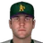
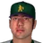

Franchise record book · ABL
New Orleans Athletics
Seasons covered: 2002–2002. Only games played for this franchise count.
This club has no pre-2002 history in the export, so its record book is the 2002 season to date. Rate records need 3.1 PA or 1 inning per team game.
Home runs
| # | Player | Season | Team | Home runs |
|---|---|---|---|---|
| #1 | 2002 (ABL) |  New Orleans Athletics New Orleans Athletics | 8 | |
| #2 | 2002 (ABL) | New Orleans Athletics | 7 | |
| #3 | 2002 (ABL) | New Orleans Athletics | 2 | |
| #4 | 2002 (ABL) | New Orleans Athletics | 2 | |
| #5 |  Laynce Nix • | 2002 (ABL) | New Orleans Athletics | 2 |
| #6 | 2002 (ABL) | New Orleans Athletics | 1 | |
| #7 | 2002 (ABL) | New Orleans Athletics | 1 | |
| #8 | 2002 (ABL) | New Orleans Athletics | 1 | |
| #9 | 2002 (ABL) | New Orleans Athletics | 1 | |
| #10 | 2002 (ABL) | New Orleans Athletics | 1 |
Hits
| # | Player | Season | Team | Hits |
|---|---|---|---|---|
| #1 | 2002 (ABL) | New Orleans Athletics | 52 | |
| #2 | 2002 (ABL) | New Orleans Athletics | 45 | |
| #3 | 2002 (ABL) | New Orleans Athletics | 41 | |
| #4 | 2002 (ABL) | New Orleans Athletics | 38 | |
| #5 | 2002 (ABL) | New Orleans Athletics | 38 | |
| #6 | 2002 (ABL) | New Orleans Athletics | 35 | |
| #7 | 2002 (ABL) | New Orleans Athletics | 30 | |
| #8 | Laynce Nix • | 2002 (ABL) | New Orleans Athletics | 24 |
| #9 | 2002 (ABL) | New Orleans Athletics | 23 | |
| #10 | 2002 (ABL) | New Orleans Athletics | 22 |
RBI
| # | Player | Season | Team | RBI |
|---|---|---|---|---|
| #1 | 2002 (ABL) | New Orleans Athletics | 35 | |
| #2 | 2002 (ABL) | New Orleans Athletics | 25 | |
| #3 | 2002 (ABL) | New Orleans Athletics | 23 | |
| #4 | 2002 (ABL) | New Orleans Athletics | 19 | |
| #5 | 2002 (ABL) | New Orleans Athletics | 17 | |
| #6 | 2002 (ABL) | New Orleans Athletics | 16 | |
| #7 | 2002 (ABL) | New Orleans Athletics | 16 | |
| #8 | 2002 (ABL) | New Orleans Athletics | 14 | |
| #9 | Laynce Nix • | 2002 (ABL) | New Orleans Athletics | 14 |
| #10 | 2002 (ABL) | New Orleans Athletics | 11 |
Runs
| # | Player | Season | Team | Runs |
|---|---|---|---|---|
| #1 | 2002 (ABL) | New Orleans Athletics | 36 | |
| #2 | 2002 (ABL) | New Orleans Athletics | 29 | |
| #3 | 2002 (ABL) | New Orleans Athletics | 25 | |
| #4 | 2002 (ABL) | New Orleans Athletics | 24 | |
| #5 | 2002 (ABL) | New Orleans Athletics | 19 | |
| #6 | 2002 (ABL) | New Orleans Athletics | 19 | |
| #7 | Laynce Nix • | 2002 (ABL) | New Orleans Athletics | 18 |
| #8 | 2002 (ABL) | New Orleans Athletics | 16 | |
| #9 | 2002 (ABL) | New Orleans Athletics | 11 | |
| #10 | 2002 (ABL) | New Orleans Athletics | 8 |
Stolen bases
| # | Player | Season | Team | Stolen bases |
|---|---|---|---|---|
| #1 | 2002 (ABL) | New Orleans Athletics | 7 | |
| #2 | 2002 (ABL) | New Orleans Athletics | 6 | |
| #3 | 2002 (ABL) | New Orleans Athletics | 6 | |
| #4 | 2002 (ABL) | New Orleans Athletics | 3 | |
| #5 | 2002 (ABL) | New Orleans Athletics | 3 | |
| #6 | 2002 (ABL) | New Orleans Athletics | 2 | |
| #7 |  Efren Espinoza • | 2002 (ABL) | New Orleans Athletics | 2 |
| #8 | 2002 (ABL) | New Orleans Athletics | 1 | |
| #9 | 2002 (ABL) | New Orleans Athletics | 1 | |
| #10 | 2002 (ABL) | New Orleans Athletics | 1 |
Doubles
| # | Player | Season | Team | Doubles |
|---|---|---|---|---|
| #1 | 2002 (ABL) | New Orleans Athletics | 11 | |
| #2 | 2002 (ABL) | New Orleans Athletics | 10 | |
| #3 | 2002 (ABL) | New Orleans Athletics | 10 | |
| #4 | 2002 (ABL) | New Orleans Athletics | 9 | |
| #5 | 2002 (ABL) | New Orleans Athletics | 8 | |
| #6 | 2002 (ABL) | New Orleans Athletics | 7 | |
| #7 | Laynce Nix • | 2002 (ABL) | New Orleans Athletics | 7 |
| #8 | 2002 (ABL) | New Orleans Athletics | 6 | |
| #9 | 2002 (ABL) | New Orleans Athletics | 5 | |
| #10 | 2002 (ABL) | New Orleans Athletics | 5 |
Triples
| # | Player | Season | Team | Triples |
|---|---|---|---|---|
| #1 | 2002 (ABL) | New Orleans Athletics | 2 | |
| #2 | 2002 (ABL) | New Orleans Athletics | 2 | |
| #3 | Laynce Nix • | 2002 (ABL) | New Orleans Athletics | 2 |
| #4 | 2002 (ABL) | New Orleans Athletics | 1 | |
| #5 | 2002 (ABL) | New Orleans Athletics | 1 | |
| #6 | 2002 (ABL) | New Orleans Athletics | 1 | |
| #7 | 2002 (ABL) | New Orleans Athletics | 1 | |
| #8 | 2002 (ABL) | New Orleans Athletics | 0 | |
| #9 | 2002 (ABL) | New Orleans Athletics | 0 | |
| #10 | 2002 (ABL) | New Orleans Athletics | 0 |
Walks
| # | Player | Season | Team | Walks |
|---|---|---|---|---|
| #1 | 2002 (ABL) | New Orleans Athletics | 28 | |
| #2 | 2002 (ABL) | New Orleans Athletics | 21 | |
| #3 | 2002 (ABL) | New Orleans Athletics | 19 | |
| #4 | 2002 (ABL) | New Orleans Athletics | 16 | |
| #5 | 2002 (ABL) | New Orleans Athletics | 13 | |
| #6 | 2002 (ABL) | New Orleans Athletics | 10 | |
| #7 | 2002 (ABL) | New Orleans Athletics | 9 | |
| #8 | 2002 (ABL) | New Orleans Athletics | 7 | |
| #9 | 2002 (ABL) | New Orleans Athletics | 7 | |
| #10 | 2002 (ABL) | New Orleans Athletics | 7 |
Total bases
| # | Player | Season | Team | Total bases |
|---|---|---|---|---|
| #1 | 2002 (ABL) | New Orleans Athletics | 84 | |
| #2 | 2002 (ABL) | New Orleans Athletics | 74 | |
| #3 | 2002 (ABL) | New Orleans Athletics | 59 | |
| #4 | 2002 (ABL) | New Orleans Athletics | 54 | |
| #5 | 2002 (ABL) | New Orleans Athletics | 51 | |
| #6 | 2002 (ABL) | New Orleans Athletics | 45 | |
| #7 | 2002 (ABL) | New Orleans Athletics | 43 | |
| #8 | Laynce Nix • | 2002 (ABL) | New Orleans Athletics | 41 |
| #9 | 2002 (ABL) | New Orleans Athletics | 36 | |
| #10 | 2002 (ABL) | New Orleans Athletics | 35 |
Batting average qualified
| # | Player | Season | Team | Batting average |
|---|---|---|---|---|
| #1 | 2002 (ABL) | New Orleans Athletics | .325 | |
| #2 | 2002 (ABL) | New Orleans Athletics | .314 | |
| #3 | 2002 (ABL) | New Orleans Athletics | .309 | |
| #4 | 2002 (ABL) | New Orleans Athletics | .302 | |
| #5 | 2002 (ABL) | New Orleans Athletics | .285 | |
| #6 | 2002 (ABL) | New Orleans Athletics | .285 | |
| #7 | 2002 (ABL) | New Orleans Athletics | .229 | |
| #8 | 2002 (ABL) | New Orleans Athletics | .200 |
On-base % qualified
| # | Player | Season | Team | On-base % |
|---|---|---|---|---|
| #1 | 2002 (ABL) | New Orleans Athletics | .421 | |
| #2 | 2002 (ABL) | New Orleans Athletics | .403 | |
| #3 | 2002 (ABL) | New Orleans Athletics | .382 | |
| #4 | 2002 (ABL) | New Orleans Athletics | .377 | |
| #5 | 2002 (ABL) | New Orleans Athletics | .356 | |
| #6 | 2002 (ABL) | New Orleans Athletics | .343 | |
| #7 | 2002 (ABL) | New Orleans Athletics | .299 | |
| #8 | 2002 (ABL) | New Orleans Athletics | .273 |
Slugging % qualified
| # | Player | Season | Team | Slugging % |
|---|---|---|---|---|
| #1 | 2002 (ABL) | New Orleans Athletics | .525 | |
| #2 | 2002 (ABL) | New Orleans Athletics | .514 | |
| #3 | 2002 (ABL) | New Orleans Athletics | .439 | |
| #4 | 2002 (ABL) | New Orleans Athletics | .421 | |
| #5 | 2002 (ABL) | New Orleans Athletics | .396 | |
| #6 | 2002 (ABL) | New Orleans Athletics | .350 | |
| #7 | 2002 (ABL) | New Orleans Athletics | .344 | |
| #8 | 2002 (ABL) | New Orleans Athletics | .313 |
OPS qualified
| # | Player | Season | Team | OPS |
|---|---|---|---|---|
| #1 | 2002 (ABL) | New Orleans Athletics | .917 | |
| #2 | 2002 (ABL) | New Orleans Athletics | .902 | |
| #3 | 2002 (ABL) | New Orleans Athletics | .842 | |
| #4 | 2002 (ABL) | New Orleans Athletics | .795 | |
| #5 | 2002 (ABL) | New Orleans Athletics | .778 | |
| #6 | 2002 (ABL) | New Orleans Athletics | .693 | |
| #7 | 2002 (ABL) | New Orleans Athletics | .616 | |
| #8 | 2002 (ABL) | New Orleans Athletics | .612 |
WAR (OOTP)
| # | Player | Season | Team | WAR (OOTP) |
|---|---|---|---|---|
| #1 | 2002 (ABL) | New Orleans Athletics | 1.0 | |
| #2 | 2002 (ABL) | New Orleans Athletics | 0.7 | |
| #3 | 2002 (ABL) | New Orleans Athletics | 0.6 | |
| #4 | 2002 (ABL) | New Orleans Athletics | 0.3 | |
| #5 | 2002 (ABL) | New Orleans Athletics | 0.3 | |
| #6 | 2002 (ABL) | New Orleans Athletics | 0.2 | |
| #7 | 2002 (ABL) | New Orleans Athletics | 0.1 | |
| #8 | 2002 (ABL) | New Orleans Athletics | 0.1 | |
| #9 | 2002 (ABL) | New Orleans Athletics | 0.1 | |
| #10 | 2002 (ABL) | New Orleans Athletics | 0.1 |
Wins
| # | Player | Season | Team | Wins |
|---|---|---|---|---|
| #1 | 2002 (ABL) | New Orleans Athletics | 4 | |
| #2 | 2002 (ABL) | New Orleans Athletics | 3 | |
| #3 | 2002 (ABL) | New Orleans Athletics | 3 | |
| #4 | 2002 (ABL) | New Orleans Athletics | 3 | |
| #5 | 2002 (ABL) | New Orleans Athletics | 2 | |
| #6 | 2002 (ABL) | New Orleans Athletics | 1 | |
| #7 | 2002 (ABL) | New Orleans Athletics | 1 | |
| #8 | 2002 (ABL) | New Orleans Athletics | 1 | |
| #9 | 2002 (ABL) | New Orleans Athletics | 1 | |
| #10 | 2002 (ABL) | New Orleans Athletics | 1 |
Strikeouts
| # | Player | Season | Team | Strikeouts |
|---|---|---|---|---|
| #1 | 2002 (ABL) | New Orleans Athletics | 46 | |
| #2 | 2002 (ABL) | New Orleans Athletics | 45 | |
| #3 | 2002 (ABL) | New Orleans Athletics | 29 | |
| #4 | 2002 (ABL) | New Orleans Athletics | 26 | |
| #5 | Denny Lail • | 2002 (ABL) | New Orleans Athletics | 25 |
| #6 | 2002 (ABL) | New Orleans Athletics | 24 | |
| #7 | 2002 (ABL) | New Orleans Athletics | 19 | |
| #8 | 2002 (ABL) | New Orleans Athletics | 17 | |
| #9 | 2002 (ABL) | New Orleans Athletics | 14 | |
| #10 | 2002 (ABL) | New Orleans Athletics | 12 |
Saves
| # | Player | Season | Team | Saves |
|---|---|---|---|---|
| #1 | 2002 (ABL) | New Orleans Athletics | 10 | |
| #2 | 2002 (ABL) | New Orleans Athletics | 2 | |
| #3 | 2002 (ABL) | New Orleans Athletics | 0 | |
| #4 | 2002 (ABL) | New Orleans Athletics | 0 | |
| #5 | 2002 (ABL) | New Orleans Athletics | 0 | |
| #6 | 2002 (ABL) | New Orleans Athletics | 0 | |
| #7 | 2002 (ABL) | New Orleans Athletics | 0 | |
| #8 | 2002 (ABL) | New Orleans Athletics | 0 | |
| #9 | 2002 (ABL) | New Orleans Athletics | 0 | |
| #10 | 2002 (ABL) | New Orleans Athletics | 0 |
Innings
| # | Player | Season | Team | Innings |
|---|---|---|---|---|
| #1 | 2002 (ABL) | New Orleans Athletics | 55.0 | |
| #2 | 2002 (ABL) | New Orleans Athletics | 46.1 | |
| #3 | Denny Lail • | 2002 (ABL) | New Orleans Athletics | 34.2 |
| #4 | 2002 (ABL) | New Orleans Athletics | 34.0 | |
| #5 | 2002 (ABL) | New Orleans Athletics | 26.1 | |
| #6 | 2002 (ABL) | New Orleans Athletics | 25.1 | |
| #7 | 2002 (ABL) | New Orleans Athletics | 24.1 | |
| #8 | 2002 (ABL) | New Orleans Athletics | 20.2 | |
| #9 | 2002 (ABL) | New Orleans Athletics | 19.1 | |
| #10 | 2002 (ABL) | New Orleans Athletics | 19.0 |
Complete games
| # | Player | Season | Team | Complete games |
|---|---|---|---|---|
| #1 | 2002 (ABL) | New Orleans Athletics | 1 | |
| #2 | 2002 (ABL) | New Orleans Athletics | 0 | |
| #3 | 2002 (ABL) | New Orleans Athletics | 0 | |
| #4 | 2002 (ABL) | New Orleans Athletics | 0 | |
| #5 | 2002 (ABL) | New Orleans Athletics | 0 | |
| #6 | 2002 (ABL) | New Orleans Athletics | 0 | |
| #7 | 2002 (ABL) | New Orleans Athletics | 0 | |
| #8 | 2002 (ABL) | New Orleans Athletics | 0 | |
| #9 | 2002 (ABL) | New Orleans Athletics | 0 | |
| #10 | 2002 (ABL) | New Orleans Athletics | 0 |
Shutouts
| # | Player | Season | Team | Shutouts |
|---|---|---|---|---|
| #1 | 2002 (ABL) | New Orleans Athletics | 0 | |
| #2 | 2002 (ABL) | New Orleans Athletics | 0 | |
| #3 | 2002 (ABL) | New Orleans Athletics | 0 | |
| #4 | 2002 (ABL) | New Orleans Athletics | 0 | |
| #5 | 2002 (ABL) | New Orleans Athletics | 0 | |
| #6 | 2002 (ABL) | New Orleans Athletics | 0 | |
| #7 | 2002 (ABL) | New Orleans Athletics | 0 | |
| #8 | 2002 (ABL) | New Orleans Athletics | 0 | |
| #9 | 2002 (ABL) | New Orleans Athletics | 0 | |
| #10 | 2002 (ABL) | New Orleans Athletics | 0 |
ERA qualified
| # | Player | Season | Team | ERA |
|---|---|---|---|---|
| #1 | 2002 (ABL) | New Orleans Athletics | 4.75 | |
| #2 | 2002 (ABL) | New Orleans Athletics | 6.22 |
WHIP qualified
| # | Player | Season | Team | WHIP |
|---|---|---|---|---|
| #1 | 2002 (ABL) | New Orleans Athletics | 1.44 | |
| #2 | 2002 (ABL) | New Orleans Athletics | 1.79 |
K/9 qualified
| # | Player | Season | Team | K/9 |
|---|---|---|---|---|
| #1 | 2002 (ABL) | New Orleans Athletics | 8.7 | |
| #2 | 2002 (ABL) | New Orleans Athletics | 7.5 |
WAR (OOTP)
| # | Player | Season | Team | WAR (OOTP) |
|---|---|---|---|---|
| #1 | 2002 (ABL) | New Orleans Athletics | 0.7 | |
| #2 | 2002 (ABL) | New Orleans Athletics | 0.7 | |
| #3 | 2002 (ABL) | New Orleans Athletics | 0.6 | |
| #4 | 2002 (ABL) | New Orleans Athletics | 0.5 | |
| #5 | 2002 (ABL) | New Orleans Athletics | 0.4 | |
| #6 | 2002 (ABL) | New Orleans Athletics | 0.4 | |
| #7 | 2002 (ABL) | New Orleans Athletics | 0.1 | |
| #8 | 2002 (ABL) | New Orleans Athletics | 0.0 | |
| #9 | 2002 (ABL) | New Orleans Athletics | 0.0 | |
| #10 | 2002 (ABL) | New Orleans Athletics | -0.1 |
Home runs
| # | Player | Years | Home runs |
|---|---|---|---|
| #1 | 1993–02 | 8 | |
| #2 | 2002–02 | 7 | |
| #3 | 1993–02 | 2 | |
| #4 | 2001–02 | 2 | |
| #5 | Laynce Nix • | 2002–02 | 2 |
| #6 | 1996–02 | 1 | |
| #7 | 1995–02 | 1 | |
| #8 | 1991–02 | 1 | |
| #9 | 1999–02 | 1 | |
| #10 | 1992–02 | 1 |
Hits
| # | Player | Years | Hits |
|---|---|---|---|
| #1 | 1993–02 | 52 | |
| #2 | 1992–02 | 45 | |
| #3 | 2002–02 | 41 | |
| #4 | 1996–02 | 38 | |
| #5 | 1991–02 | 38 | |
| #6 | 1999–02 | 35 | |
| #7 | 2001–02 | 30 | |
| #8 | Laynce Nix • | 2002–02 | 24 |
| #9 | 1993–02 | 23 | |
| #10 | 1995–02 | 22 |
RBI
| # | Player | Years | RBI |
|---|---|---|---|
| #1 | 2002–02 | 35 | |
| #2 | 1993–02 | 25 | |
| #3 | 2001–02 | 23 | |
| #4 | 1999–02 | 19 | |
| #5 | 1995–02 | 17 | |
| #6 | 1991–02 | 16 | |
| #7 | 1992–02 | 16 | |
| #8 | 1996–02 | 14 | |
| #9 | Laynce Nix • | 2002–02 | 14 |
| #10 | 1993–02 | 11 |
Runs
| # | Player | Years | Runs |
|---|---|---|---|
| #1 | 1993–02 | 36 | |
| #2 | 2002–02 | 29 | |
| #3 | 1992–02 | 25 | |
| #4 | 2001–02 | 24 | |
| #5 | 1996–02 | 19 | |
| #6 | 1993–02 | 19 | |
| #7 | Laynce Nix • | 2002–02 | 18 |
| #8 | 1991–02 | 16 | |
| #9 | 1995–02 | 11 | |
| #10 | 1999–02 | 8 |
Stolen bases
| # | Player | Years | Stolen bases |
|---|---|---|---|
| #1 | 1992–02 | 7 | |
| #2 | 1996–02 | 6 | |
| #3 | 2001–02 | 6 | |
| #4 | 1995–02 | 3 | |
| #5 | 1998–02 | 3 | |
| #6 | 2002–02 | 2 | |
| #7 | Efren Espinoza • | 2002–02 | 2 |
| #8 | 1993–02 | 1 | |
| #9 | 1991–02 | 1 | |
| #10 | 2002–02 | 1 |
Doubles
| # | Player | Years | Doubles |
|---|---|---|---|
| #1 | 1992–02 | 11 | |
| #2 | 1991–02 | 10 | |
| #3 | 2002–02 | 10 | |
| #4 | 1996–02 | 9 | |
| #5 | 1995–02 | 8 | |
| #6 | 2001–02 | 7 | |
| #7 | Laynce Nix • | 2002–02 | 7 |
| #8 | 1993–02 | 6 | |
| #9 | 1999–02 | 5 | |
| #10 | 1998–02 | 5 |
Triples
| # | Player | Years | Triples |
|---|---|---|---|
| #1 | 1996–02 | 2 | |
| #2 | 1993–02 | 2 | |
| #3 | Laynce Nix • | 2002–02 | 2 |
| #4 | 1993–02 | 1 | |
| #5 | 1995–02 | 1 | |
| #6 | 2001–02 | 1 | |
| #7 | 2002–02 | 1 | |
| #8 | 2000–02 | 0 | |
| #9 | 1991–02 | 0 | |
| #10 | 1999–02 | 0 |
Walks
| # | Player | Years | Walks |
|---|---|---|---|
| #1 | 2002–02 | 28 | |
| #2 | 1991–02 | 21 | |
| #3 | 1992–02 | 19 | |
| #4 | 1993–02 | 16 | |
| #5 | 1993–02 | 13 | |
| #6 | 1999–02 | 10 | |
| #7 | 2001–02 | 9 | |
| #8 | 1996–02 | 7 | |
| #9 | 1995–02 | 7 | |
| #10 | 1999–02 | 7 |
Total bases
| # | Player | Years | Total bases |
|---|---|---|---|
| #1 | 1993–02 | 84 | |
| #2 | 2002–02 | 74 | |
| #3 | 1992–02 | 59 | |
| #4 | 1996–02 | 54 | |
| #5 | 1991–02 | 51 | |
| #6 | 2001–02 | 45 | |
| #7 | 1999–02 | 43 | |
| #8 | Laynce Nix • | 2002–02 | 41 |
| #9 | 1993–02 | 36 | |
| #10 | 1995–02 | 35 |
Batting average min 2,000 PA
| # | Player | Years | Batting average |
|---|
On-base % min 2,000 PA
| # | Player | Years | On-base % |
|---|
Slugging % min 2,000 PA
| # | Player | Years | Slugging % |
|---|
OPS min 2,000 PA
| # | Player | Years | OPS |
|---|
WAR (OOTP)
| # | Player | Years | WAR (OOTP) |
|---|---|---|---|
| #1 | 1993–02 | 1.0 | |
| #2 | 2002–02 | 0.7 | |
| #3 | 1998–02 | 0.6 | |
| #4 | 1991–02 | 0.3 | |
| #5 | 1996–02 | 0.3 | |
| #6 | 2002–02 | 0.2 | |
| #7 | 2002–02 | 0.1 | |
| #8 | 1995–02 | 0.1 | |
| #9 | 1999–02 | 0.1 | |
| #10 | 2001–02 | 0.1 |
Wins
| # | Player | Years | Wins |
|---|---|---|---|
| #1 | 1998–02 | 4 | |
| #2 | 2001–02 | 3 | |
| #3 | 2001–02 | 3 | |
| #4 | 2000–02 | 3 | |
| #5 | 1997–02 | 2 | |
| #6 | 2001–02 | 1 | |
| #7 | 2000–02 | 1 | |
| #8 | 1999–02 | 1 | |
| #9 | 1999–02 | 1 | |
| #10 | 2002–02 | 1 |
Strikeouts
| # | Player | Years | Strikeouts |
|---|---|---|---|
| #1 | 1998–02 | 46 | |
| #2 | 2001–02 | 45 | |
| #3 | 1999–02 | 29 | |
| #4 | 1999–02 | 26 | |
| #5 | Denny Lail • | 2002–02 | 25 |
| #6 | 2000–02 | 24 | |
| #7 | 1997–02 | 19 | |
| #8 | 2000–02 | 17 | |
| #9 | 1999–02 | 14 | |
| #10 | 2001–02 | 12 |
Saves
| # | Player | Years | Saves |
|---|---|---|---|
| #1 | 1999–02 | 10 | |
| #2 | 2000–02 | 2 | |
| #3 | 2001–02 | 0 | |
| #4 | 2001–02 | 0 | |
| #5 | 2001–02 | 0 | |
| #6 | 2000–02 | 0 | |
| #7 | 1998–02 | 0 | |
| #8 | 1999–02 | 0 | |
| #9 | 2002–02 | 0 | |
| #10 | 1999–02 | 0 |
Innings
| # | Player | Years | Innings |
|---|---|---|---|
| #1 | 1998–02 | 55.0 | |
| #2 | 2001–02 | 46.1 | |
| #3 | Denny Lail • | 2002–02 | 34.2 |
| #4 | 1999–02 | 34.0 | |
| #5 | 2000–02 | 26.1 | |
| #6 | 2001–02 | 25.1 | |
| #7 | 1999–02 | 24.1 | |
| #8 | 2000–02 | 20.2 | |
| #9 | 1999–02 | 19.1 | |
| #10 | 1997–02 | 19.0 |
Complete games
| # | Player | Years | Complete games |
|---|---|---|---|
| #1 | 2001–02 | 1 | |
| #2 | 2001–02 | 0 | |
| #3 | 2001–02 | 0 | |
| #4 | 2000–02 | 0 | |
| #5 | 1998–02 | 0 | |
| #6 | 2000–02 | 0 | |
| #7 | 1999–02 | 0 | |
| #8 | 2002–02 | 0 | |
| #9 | 1999–02 | 0 | |
| #10 | 1997–02 | 0 |
Shutouts
| # | Player | Years | Shutouts |
|---|---|---|---|
| #1 | 2001–02 | 0 | |
| #2 | 2001–02 | 0 | |
| #3 | 2001–02 | 0 | |
| #4 | 2000–02 | 0 | |
| #5 | 1998–02 | 0 | |
| #6 | 2000–02 | 0 | |
| #7 | 1999–02 | 0 | |
| #8 | 2002–02 | 0 | |
| #9 | 1999–02 | 0 | |
| #10 | 1997–02 | 0 |
ERA min 500 IP
| # | Player | Years | ERA |
|---|
WHIP min 500 IP
| # | Player | Years | WHIP |
|---|
K/9 min 500 IP
| # | Player | Years | K/9 |
|---|
WAR (OOTP)
| # | Player | Years | WAR (OOTP) |
|---|---|---|---|
| #1 | 2001–02 | 0.7 | |
| #2 | 1998–02 | 0.7 | |
| #3 | 1999–02 | 0.6 | |
| #4 | 1999–02 | 0.5 | |
| #5 | 1999–02 | 0.4 | |
| #6 | 2000–02 | 0.4 | |
| #7 | 2000–02 | 0.1 | |
| #8 | 2001–02 | 0.0 | |
| #9 | 2002–02 | 0.0 | |
| #10 | 1997–02 | -0.1 |